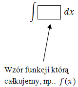

Całkowanie jest działaniem odwrotnym do
różniczkowania.
Żeby sprawnie liczyć całki, należy wcześniej dobrze opanować liczenie
pochodnych.
Całkę oznaczamy symbolem: \[\int \] Symbol
ten pochodzi od łacińskiego słowa Summa (suma).
Całką funkcji \(f(x)\) nazywamy taką funkcję \(F(x)\), że: \[F'(x)=f(x)\]
Funkcję \(F(x)\) spełniającą powyższy warunek nazywa się funkcją pierwotną.
Operację całkowania zapisuemy w następujący sposób: \[\int f(x)dx=F(x)\]
Znaczek \(dx\) oznacza, że całkujemy funkcję \(f(x)\) po zmiennej \(x\) (i tak
symbolicznie zamyka operację całkowania). Przy liczeniu prostych całek symbol \(dx\) na nic nie
wpływa, ale należy go pisać ze względów formalnych.
Możemy zatem napisać, że schemat
całkowania wygląda następująco: 
Oblicz całkę funkcji \(f(x) = 2x + 7\).
Wykonujemy następujący
rachunek: \[\int f(x)\ dx=\int 2x+7\ dx=x^2+7x\] Sprawdzamy rozwiązanie: \[(x^2+7x)'=2x+7\]
Należy jednak zauważyć, że znaleziona przez nas funkcja \(F(x) = x^2 + 7x\) nie jest jedynym
dobrym rozwiązaniem. Do powyższej funkcji moglibyśmy dodać jeszcze dowolną liczbę i wówczas
otrzymalibyśmy inną dobrą funkcję pierwotną dla funkcji \(f(x) = 2x + 7\). Na przykład:
\[(x^2+7x+13)'=2x+7\] albo: \[(x^2+7x+100)'=2x+7\]
Zatem teoretycznie
powinniśmy napisać: \[\int f(x)\ dx=\int 2x+7\ dx=x^2+7x+C\] gdzie \(C\) - to dowolna liczba
rzeczywista.
Oblicz całkę funkcji \(f(x) = x^2\).
Wykonujemy następujący
rachunek: \[\int f(x)\ dx=\int x^2\ dx=\frac{1}{3}x^3+C\] Sprawdzamy rozwiązanie:
\[\left(\frac{1}{3}x^3+C\right)'=\frac{1}{3}\cdot 3x^2=x^2\]
Do całkowania prostych funkcji wykorzystujemy
wzory całkowe, które są również przydatne przy
liczeniu całek bardziej skomplikowanych funkcji.